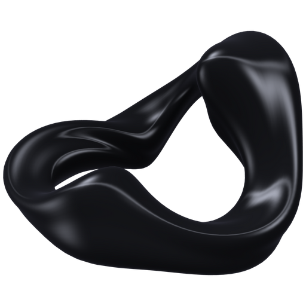

Make room for a better thought.
Chat with local models, research the web, and work through code. Queue a follow-up while your model is thinking. Keep your flow.
Your choice of models. One familiar space.
Orion Get OrionMeet Orion. Your models, your conversations, your next big idea. Together in one thoughtfully built desktop app.
Free & open source. No account required.
From the first question to the finished creation.
This is Orion, in motion.
One app. A whole lot of potential.Watch on GitHub
The tools you need, in the same conversation.
Chat with local models, research the web, and work through code. Queue a follow-up while your model is thinking. Keep your flow.
Your choice of models. One familiar space.Create images with Stable Diffusion and videos with Wan, through the native Vulkan engine. Start in Create or ask right in chat.
No Python environment. No node graphs.OrionFS connects relevant memories locally, without an extra AI or embedding model. Canvas keeps your documents with the conversation.
A little context goes a long way.Your ideas don’t need an account.
They need somewhere to happen.
Chat, image generation, and video generation can run locally. You choose the models and where inference happens.
Conversations, settings, memories, and API keys are encrypted at rest. Model weights and generated media stay local, unencrypted.
Orion doesn’t collect usage telemetry. Its source is open under the MIT License, and the app is free to use.
Web tools, downloads, and update checks use the network. If you connect a hosted AI provider, it receives the prompts and relevant memory you send.
No signup. No subscription. Just download, choose a model, and make it yours.
It depends on the models you choose. Smaller chat models need less memory; larger models, images, and videos need more. Local image and video creation requires a compatible Vulkan graphics driver. You can also connect a hosted API provider if you prefer.
Local chat and creation can work offline after the runtimes and models are downloaded. Initial setup, model downloads, web search, hosted providers, and update checks need a connection.
Use local Ollama chat models, supported GGUF models through Orion’s managed llama.cpp engine, or a configured API provider. Create supports compatible Stable Diffusion image models and Wan video bundles. Browse and download models inside Orion.
Yes. Orion has no accounts, fees, or paywalls. The app is open source under the MIT License. Any paid hosted API you choose is billed separately by that provider.